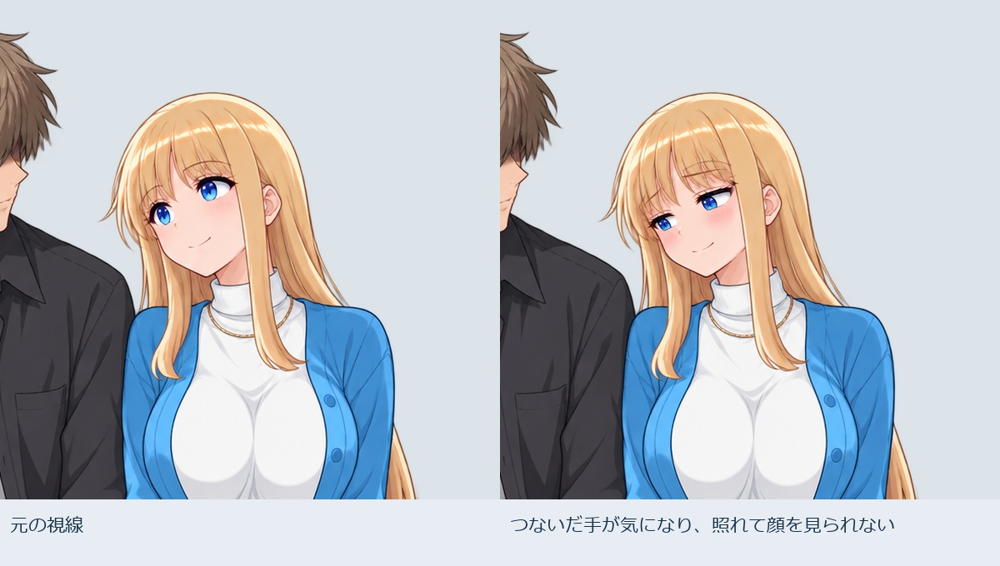
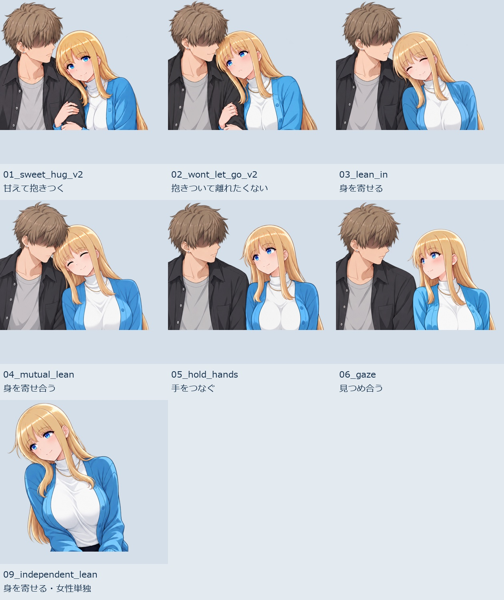

視線と感情の向き：接触と注目先を分ける
2026-10-22。新規生成2出力を顔の局所差分へ合成し、透過ペア2枚・男子3人同席の配置例4枚を用意。採用未確定の制作候補です。
男性の目元を隠す指定は保持しています。「女性が相手の顔を見る」と「互いに目が合う」は別です。旧版の「見つめ合う」は相互視線の検証済みを意味しません。
抱きついた相手の顔を見上げたい

透過ペアPNG ／ 配置例・開 ／ 配置例・閉
元の全身へ局所合成。マスク外RGBA変更0、アルファ変更0。人物・接点・周囲の二人は既存素材を再利用。
つないだ手が気になり、照れて顔を見られない

透過ペアPNG ／ 配置例・開 ／ 配置例・閉
元の全身へ局所合成。マスク外RGBA変更0、アルファ変更0。人物・接点・周囲の二人は既存素材を再利用。
既存7素材の視線監査
接触6種＋女性単独1。身体や顔の向きだけでは、瞳の注目先まで確定できません。今回、全素材を修正したわけではありません。

今後の場面指定
ヒロインの「見たい」「目を逸らしたい」を起点に、接触相手・注目先・頭の向き・瞳の向き・閉眼・相互視線の確認状態を分けます。男子Aに触れながら男子Bを見ることも、意図があれば自然です。
視線・動機の設定と監査記録 ／ 実際の生成指示2件
画像差分の選択案です。任意の相手へ自動追従する瞳制御、見る→逸らす動き、ゲーム内のフラグ実装は未実装。
前版：接触素材と個別／ペアの切替